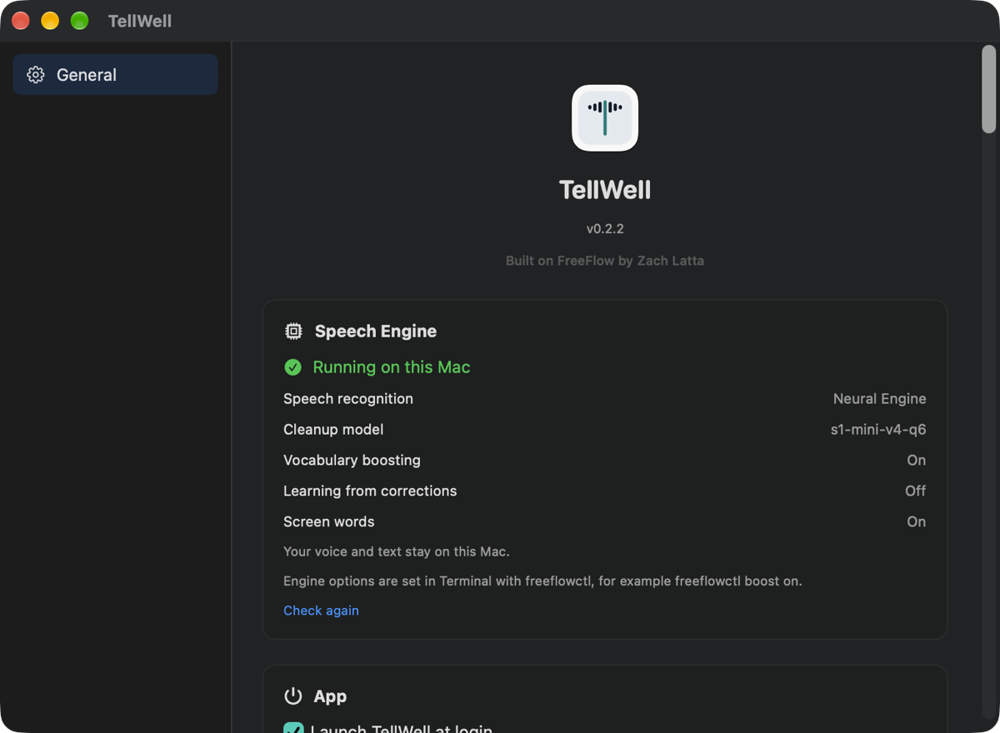

Free, private, context-aware dictation for Mac
Say it. TellWell writes it down well.
Hold a key, speak, and clean, punctuated text appears in any app, spelled the way it is on your screen. Free and open source, and it runs entirely on your Mac.
curl -fsSL https://ayushpatnaikgit.github.io/tellwell/install.sh | shVersion 0.2.2 · Apple Silicon, macOS 14 or later · MIT licence · compare with Wispr Flow · source
Context-aware: it spells what's on your screen.
Speech recognition hears rare words as common ones. "Grafana" comes out as "graph Ana", and "Siddhant" as "Sid hunt".
When you start dictating, TellWell reads the unusual words on your screen, such as names, product terms and code identifiers, using macOS's built-in text recognition on your Mac. It also uses your own vocabulary list. When a word you said sounds like one of these, it is spelled the way it appears on screen.
Context only corrects a mishearing. TellWell never inserts a word you didn't say, words on screen that don't match anything you said are ignored, and nothing it reads is stored or sent anywhere.
Ask Sid hunt to check the graph Ana dashboard.
Ask Siddhant to check the Grafana dashboard.
Both names were on screen.We should use parakeet, no actually, or a keet for the speech model.
We should use Orukeet for the speech model.
A correction mid-sentence, and a name from the vocabulary list.The Tiruchi rapalli office needs six new laptops.
The Tiruchirappalli office needs six new laptops.
A long place name, spelled from the screen.write an email to the team saying the release is delayed until monday
Write an email to the team saying the release is delayed until Monday.
It types what you said. It doesn't go off and write the email.
I've been trying to make dictation work for me for a long time. I started with Wispr Flow, then used OpenWhispr for months. It handled my vocabulary well, but it wasn't as fast as I wanted, it couldn't see what was on my screen, and its vocabulary learning kept offering to add the small edits I made, which I then had to keep turning down.
So I took FreeFlow, made it run entirely on my Mac, and fine-tuned my own cleanup model. I wanted three things: free, blazing fast, and accurate. For me, dictation is solved.
Ayush Patnaik, who made TellWell

How TellWell works
- Hold your talk key (Fn, Option, or whichever key you pick in setup) and speak.
- Speech to text runs on the Apple Neural Engine with Orukeet, a fine-tune of NVIDIA Parakeet.
- Context: the unusual words on your screen and your vocabulary are gathered while you speak.
- Cleanup: a 0.6B model fine-tuned for dictation removes fillers, applies "no wait, I mean" corrections, fixes misheard names and adds punctuation. It never finishes a sentence you left unfinished.
- Paste: the text lands at your cursor, and your clipboard is put back as it was.
- ~0.2 slast word to clean text
- 0 bytessent anywhere
- Offlineafter install
TellWell compared with cloud dictation
Where the work happens decides what it costs, how fast it is and who sees your words. Looking at Wispr Flow specifically? See TellWell as a free Wispr Flow alternative.
| TellWell | Cloud dictation apps | |
|---|---|---|
| Where your speech is processed | On your Mac (Apple Neural Engine) | On the provider's servers |
| Works offline | Yes | No |
| Screen context | Read on your Mac, never uploaded | If used, sent to the provider |
| Account or API key | None | Usually required |
| Price | Free, open source (MIT) | Usually a subscription |
| Time to text | About 0.2 s for a sentence (M4 Mac) | Depends on your connection |
Install TellWell
One command installs TellWell after checking it against the release's published checksum, installs the on-device engine (models download once, about 2 GB), starts it at login and connects the two.
curl -fsSL https://ayushpatnaikgit.github.io/tellwell/install.sh | shThen open TellWell, allow Microphone and Accessibility, and press the key you want to talk with. Screen Recording is optional; it lets TellWell spell names it sees on screen. Run the command again to update, or let TellWell update itself; your permissions carry over between updates.
Frequently asked questions
What is TellWell?
TellWell is a free, open-source dictation app for Mac that runs entirely on your computer. Hold a key, speak, and clean, punctuated text appears in whatever app you're typing in. It is context-aware: it reads the names and terms on your screen, so it spells them right. Your voice, your words and your screen never leave your Mac.
Does TellWell work offline?
Yes. Speech recognition and cleanup both run on your Mac, so dictation works without an internet connection. TellWell only goes online to install, to download its models once (about 2 GB), and to check GitHub for updates.
What does context-aware dictation mean in TellWell?
When you start dictating, TellWell reads the unusual words visible on your screen, such as names, product terms and code identifiers, using macOS's built-in text recognition on your Mac. It also uses your own vocabulary list. If a word you said sounds like one of them, it is spelled the way it appears on screen. Context only corrects mishearings: TellWell never inserts a word you didn't say.
Is TellWell free?
Yes. TellWell is free and open source under the MIT licence. There is no account, no subscription and no API key.
Which Macs does TellWell run on?
An Apple Silicon Mac (M1 or later) running macOS 14 or later. Speech recognition runs on the Apple Neural Engine.
Which apps does TellWell work in?
Any app with a text field: email, Slack and other chat apps, documents, browsers, code editors and terminals. TellWell pastes the text where your cursor is and restores your clipboard afterwards.
How is TellWell different from macOS Dictation?
macOS Dictation types the words it hears. TellWell also removes filler words, applies spoken corrections such as "no wait, I mean", adds punctuation, and uses the words on your screen to spell names correctly.
Is TellWell a free alternative to Wispr Flow or Superwhisper?
TellWell does the same kind of job as AI dictation apps like Wispr Flow and Superwhisper: hold a key, speak, and get clean text. TellWell is free and open source, and all of its processing happens on your Mac. Its cleanup model is built on Superwhisper's open S1-mini model.
What languages does TellWell support?
TellWell is tuned for English. Its cleanup model was trained on English dictation.
Who makes TellWell?
TellWell is made by Ayush Patnaik. It is a fork of FreeFlow, the open-source Mac dictation app by Zach Latta, and uses the freeflow-local engine for on-device speech recognition and cleanup.